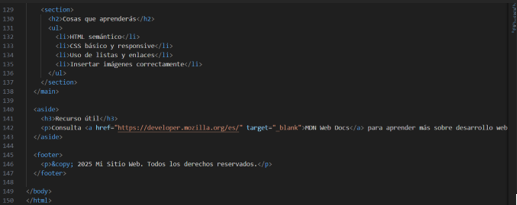

Temas y actividades
Temas aprendidos: Uso de CSS para estilos visuales, Flexbox, Grid Layout, media queries…
¿Qué es CSS?
CSS (Cascading Style Sheets) es el lenguaje utilizado para aplicar estilos visuales a documentos HTML. Permite personalizar colores, fuentes, espaciados, diseño responsivo y más. Es fundamental para separar la estructura del contenido (HTML) del diseño (CSS).
Formas de enlazar CSS:
Se puede enlazar CSS de tres maneras:
1. Externo: archivo .css vinculado con la etiqueta <link> en el <head> del HTML.
2. Interno: con la etiqueta <style> dentro del HTML.
3. En línea: dentro del atributo style directamente en la etiqueta HTML.
La más recomendada es la hoja externa para mayor organización y reutilización.
Selectores:

Ejercicios de laboratorio: Aplicar estilos para crear diseños adaptables y visualmente atractivos.
Ejemplos desarrollados:



Resultado final obtenido:

Reflexión: Comprendí cómo usar CSS para transformar contenido plano en interfaces atractivas, accesibles y adaptables a diferentes pantallas.